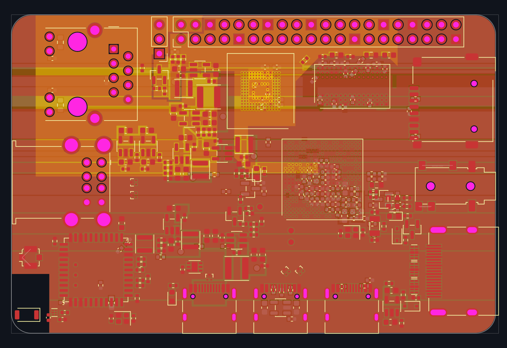

The six full circuits were rerouted fresh on the unchanged published stack: tscircuit 0.0.3231 · core 0.0.2410 · autorouter 0.0.1124 · fanout 0.0.84 · bus lanes 0.0.62.
0/6 clean boards · 0/6 boards finish fanout · 0/12 DDR bus phases start · 0 accepted traces or vias
Each job checked the actual core routing plan before solving: every BGA fanout precedes every DDR byte bus; all other routing follows. The bulk plane-first phase was removed. Original copper starts at zero, and all component/pad positions and full net memberships pass independent audits. No production solver code or fabrication rules changed; the pending fix PR is excluded.
“Best” is the completed solver’s reported best result. “Last” is the observed partial assignment at the deadline. Fanout routes include both local plane drops and boundary escapes. Connected-net counts do not mean DDR routing ran. A clean board requires every routable net connected and zero physical findings.
Most useful next target: local plane drops inside fanout
The first fanout inputs contain 349 plane-drop connections. All 349 plane buses are listed as failed in the last recorded assignments. These statistics describe those assignments; they are not complete searches for the two timed-out boards.
Board
Local plane drops
Boundary connections
Plane buses failed in last assignment
orangecrab
166
107
166
h616
62
112
62
butterstick
38
53
38
glider
43
52
43
imx6
20
12
20
icepi
20
12
20
iCE/Pi is a small concrete repro: U22 has 32 routing requests, comprising 20 plane drops and 12 boundary connections. Its best complete search routes only one request, so at least 19 plane drops remain unrouted even in the best candidate. A direct replay of the exact captured input reproduces the same 1/32 result and 26,131 iterations.
The direct replay took 202.230 s with CPU profiling enabled. 93.6% of sampled time is inside routePlaneTerminatedBus, counting each sample once across all call contexts. Array membership checks consume 39.496 s of self time (19.5% of samples). The profile identifies both the failing work and an overhead hotspot; no speed improvement is claimed by this analysis.
The next focused investigation should isolate one rejected off-pad plane drop with the native BGA pads, opposite-layer obstacles, via spans and clearances. Determine which candidate-generation or validation condition rejects it before tuning downstream buses. The generic boundary-padding error does not establish that padding alone causes the failure: local plane drops fail too.
Current output: 0 published traces, 0 vias; DDR bus routing never started. 3/152 nets connected by the emitted physical geometry; the board remains incomplete.
Full native PCB layout. Pads and fresh pours remain visible; no routed signal copper was accepted.Previous plane-first result for context
The earlier run bypassed separate fanout, then attempted bulk plane routing before DDR buses. It published 430 traces and 271 vias, with 7/152 connected nets. This is a different workflow and remains incomplete.
Current output: 0 published traces, 0 vias; DDR bus routing never started. 0/121 nets connected by the emitted physical geometry; the board remains incomplete.
Full native PCB layout. Pads and fresh pours remain visible; no routed signal copper was accepted.Previous plane-first result for context
The earlier run bypassed separate fanout, then attempted bulk plane routing before DDR buses. It published 221 traces and 140 vias, with 2/121 connected nets. This is a different workflow and remains incomplete.
Fanout stopped: Fanout failed for U11: only 5 of 91 connections could escape to the breakout boundary. The breakout boundary is 0.7mm from the pads at its narrowest point, which all 91 escapes have to share. Give the fanout more room by increasing the breakout's padding, or by extending the breakout to include the parts crowding it (decoupling capacitors, series resistors) so their pads sit inside the boundary instead of against it.
Current output: 0 published traces, 0 vias; DDR bus routing never started. 9/317 nets connected by the emitted physical geometry; the board remains incomplete.
Full native PCB layout. Pads and fresh pours remain visible; no routed signal copper was accepted.Previous plane-first result for context
The earlier run bypassed separate fanout, then attempted bulk plane routing before DDR buses. It published 0 traces and 0 vias, with 9/317 connected nets. This is a different workflow and remains incomplete.
Fanout stopped: Fanout failed for U12: only 9 of 95 connections could escape to the breakout boundary. The breakout boundary is 0.7mm from the pads at its narrowest point, which all 95 escapes have to share. Give the fanout more room by increasing the breakout's padding, or by extending the breakout to include the parts crowding it (decoupling capacitors, series resistors) so their pads sit inside the boundary instead of against it.
Current output: 0 published traces, 0 vias; DDR bus routing never started. 0/356 nets connected by the emitted physical geometry; the board remains incomplete.
Full native PCB layout. Pads and fresh pours remain visible; no routed signal copper was accepted.Previous plane-first result for context
The earlier run bypassed separate fanout, then attempted bulk plane routing before DDR buses. It published 537 traces and 322 vias, with 1/356 connected nets. This is a different workflow and remains incomplete.
Fanout stopped: Fanout failed for U10: only 2 of 32 connections could escape to the breakout boundary. The breakout boundary is 0.7mm from the pads at its narrowest point, which all 32 escapes have to share. Give the fanout more room by increasing the breakout's padding, or by extending the breakout to include the parts crowding it (decoupling capacitors, series resistors) so their pads sit inside the boundary instead of against it.
Current output: 0 published traces, 0 vias; DDR bus routing never started. 3/404 nets connected by the emitted physical geometry; the board remains incomplete.
Full native PCB layout. Pads and fresh pours remain visible; no routed signal copper was accepted.Previous plane-first result for context
The earlier run bypassed separate fanout, then attempted bulk plane routing before DDR buses. It published 0 traces and 0 vias, with 3/404 connected nets. This is a different workflow and remains incomplete.
Fanout stopped: Fanout failed for U22: only 1 of 32 connections could escape to the breakout boundary. The breakout boundary is 0.7mm from the pads at its narrowest point, which all 32 escapes have to share. Give the fanout more room by increasing the breakout's padding, or by extending the breakout to include the parts crowding it (decoupling capacitors, series resistors) so their pads sit inside the boundary instead of against it.
Current output: 0 published traces, 0 vias; DDR bus routing never started. 7/230 nets connected by the emitted physical geometry; the board remains incomplete.
Full native PCB layout. Pads and fresh pours remain visible; no routed signal copper was accepted.Previous plane-first result for context
The earlier run bypassed separate fanout, then attempted bulk plane routing before DDR buses. It published 0 traces and 0 vias, with 7/230 connected nets. This is a different workflow and remains incomplete.

What changed in this baseline
The previous harness ran either plane-first without fanout, or fanout → planes → buses. This run uses fanout → byte0/byte1 buses → remaining DDR → all other nets, including bulk power/ground routing. Local plane drops are part of normal fanout. Native geometry, the 0.7 mm breakout padding, net membership, copper layers, via-in-pad prohibition and through-via rules are retained.
The run allows 600 seconds of routing and a 660-second process limit, then performs a separate physical audit. One full-board process runs on each 8-vCPU ARM Blacksmith worker. The previous six-board run used two processes per worker; elapsed times across those runs are not a paired speed comparison. The smaller passing DDR controls were not rerun or substituted for these full boards.
Existing PRs remain open and unchanged. This result establishes a corrected workflow baseline and a fanout investigation target.
Reproduce
Use the pinned source refs in provenance.json and Bun 1.4.3 on Blacksmith. The exported full-board models contain all six TSX circuits, source geometry, exact harness dependency lockfile and licenses. Follow reproduce.sh for the source builds and per-board plan, render and audit commands. The captured fanout-1-input.json.gz files include both native solver parameters and options.